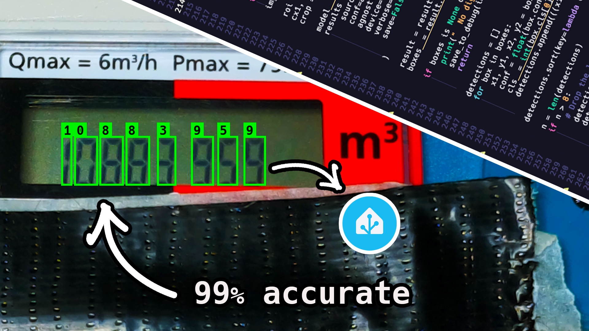

视觉巡检闭环与报告
在巡检点拍照/录像，用 YOLOv8/ONNX 识别表计读数或异常目标，汇总生成巡检报告，最后自主回充。验收标准：完成「建图 - 定位 - 巡检 - 识别 - 报告」五环闭环；关键技巧：光照不足需补光、目标阈值要标定。
00课程节奏：五星学习法 · 8 段微课（每段 ≤ 15 min）
本实验按五星学习法组织：先用一个真实故障聚焦问题，再激活旧知（EXP-01~03 全链路 + 图像识别直觉 + 概率与阈值），接着示证新知（YOLO 一次看完 + 巡检日报数据流 + 回充分段动画），然后动手应用新知完成从到点拍照到自主回充的全闭环，最后借排障与拓展融会贯通。全程切成 8 段微课、每段不超过 15 分钟，段间停顿 1~2 分钟消化；纯讲授合计约 100 分钟，其余课时用于动手实操与个别辅导。
| 课段 | 五星阶段 | 时长 | 对应章节 | 本段任务 |
|---|---|---|---|---|
| 课段 1 | 聚焦问题 | 12 min | §01 + §02 前半 | 抛出现场故障"烟雾报警狼来了"，明确本课要解决的目标 |
| 课段 2 | 激活旧知 | 8 min | §02 后半 | 用 EXP-01~03 全链路、图像识别直觉、概率与阈值三条旧知解释故障成因 |
| 课段 3 | 示证新知 | 15 min | §03 | 认识相机、coco_detector、ONNX 与回充桩硬件 |
| 课段 4 | 示证新知 | 12 min | §06 | 看懂 YOLO 检测与自主回充三阶段动画 |
| 课段 5 | 应用新知 | 15 min | §04 S1~S3 + §05 ①②③ | 到点停稳 + 补光拍照 + coco_detector 实时识别（边讲边演） |
| 课段 6 | 应用新知 | 15 min | §04 S4~S5 + §05 ④⑤ | 阈值标定 + 生成日报 + 自主回充——课段 1 的故障就此根除 |
| 课段 7 | 应用新知 | 10 min | §07 | 置信度阈值标定台与报告生成器自测，全通方可结课 |
| 课段 8 | 融会贯通 | 13 min | §08~§10 | 排障口诀收口，挑战题与思考题拔高迁移 |
讲课提示：课段 1/2 以讲授 + 提问为主；课段 3~6 边讲边演（实物 / 动画 / 命令行）；课段 7 学员独立完成；课段 8 答疑拔高。段与段之间停顿 1~2 分钟，确认学员跟上再进下一段。
01学习目标课段 1 · 聚焦问题 · 12 min
- 用自己的话讲清 YOLO：看图圈目标——一次看完一整张图，同时给出框、类别和置信度。
- 读懂置信度阈值的两难：调高漏检、调低误检，理解「阈值标定」为什么是技巧项。
- 在巡检点完成拍照取帧，并喂给 YOLOv8/ONNX 模型得到检测结果。
- 把「到点—拍照—识别—记录」串联起来，生成一份结构化巡检日报。
- 让 Go2 巡检结束后自主回充，打通「建图-定位-巡检-识别-报告」全闭环并复盘。
02原理：视觉识别与巡检闭环讲透课段 1 收尾 + 课段 2 · 激活旧知 · 8 min
YOLO 就是「看图圈目标」：给它一张巡检照片，它一次看完，直接在图上画框：「表计，置信度 0.91」「烟雾，置信度 0.63」。名字 YOLO = You Only Look Once（你只需看一次）——不像老办法要拿小窗口在图上一寸寸挪。每个框带一个 0~1 的置信度，代表模型有多确信框里真是那个东西；我们用一条阈值线筛它：线划高了真目标被划掉（漏检），划低了影子反光也来凑数（误检）——所以实训技巧叫「目标阈值标定」。
三条到手的路（本课走前两条）
回充：巡检的最后一个动作
识别完不是结束——电量与流程都要求狗自己回桩。Nav2 的 Docking Framework（opennav_docking）把回充分成几个阶段：先在远处把桩放进视野粗对准，再挪到桩前的预备位（staging）（参数 staging_x_offset 控制提前量），最后直线对接入库，插桩成功发完成信号。桩插上的那一刻，「建图-定位-巡检-识别-报告」五环才算真正扣成一圈。

03硬件与材料课段 3 · 示证新知 · 15 min
| 检查项 | 标准 | 不达标后果 |
|---|---|---|
| 图像话题 | go2_camera/color/image 有帧滚动 | 取不到图，coco_detector 无输入 |
| 模型文件 | best.pt / model_digit_yolo.onnx 就位 | 识别环节开天窗 |
| 阈值标定 | 用 10 张混合样本调出阈值并记录 | 漏检/误检，报告结论不可信 |
| 光照 | 每个点位试拍，直方图不过暗 | 欠曝图喂给再好的模型也白搭 |
| 电量 | ≥30%，否则先回充再执行闭环 | 报告没写完狗先趴窝 |
04操作步骤课段 5~6 · 应用新知 · 2×15 min
EXP-03 队列 + 定位收敛
camera_opencv / 图像话题取帧
coco_detector 或自训模型推理
调阈值压漏检误检并记录
汇总日报 → follow_waypoints 回桩 → docking
- 到点停稳：沿用 EXP-03 的巡检队列，每到一个点等定位收敛；把「到点事件」作为拍照触发器。
- 补光拍照：检查取景点光照，不足先开补光；SDK 侧跑
camera_opencv.py存帧，或直接录/go2_camera/color/image话题。 - 识别（零训练主线）：启动
ros2 run coco_detector coco_detector_node，订阅图像话题，检出结果发布到/detected_objects——先用现成类别跑通链路。 - 识别（自训表计）：按 smart-gas-meter 流程：标定 calibrate → 标注 label → 整理 prepare →
train_yolo.py训练 →infer_yolo.py推理 → 导出model_digit_yolo.onnx；训练命令用 Ultralytics CLI（yolo detect train model=yolov8n.pt data=... epochs=50）。 - 阈值标定（技巧）：取 10 张亮/暗/反光混合样本扫阈值（0.3→0.8），画出漏检/误检代价，选定工作点并写进报告参数栏。
- 生成报告：按图 4-2 的字段汇总各点结果，输出结构化日报（JSON）+ 可读版（Markdown）。
- 自主回充：把充电桩作为终点加入 waypoint 队列驶近，再交给 opennav_docking 分三段对接；桩位对齐 EXP-02 的 Dock 原点，插桩成功即闭环完成。
05关键命令随课段 5 / 6 对照使用
coco_detector 用法来自 go2_ros2_sdk；训练/推理命令来自 Ultralytics 与 smart-gas-meter 官方脚本。
# ① 话题侧：看图像帧、看检测结果 ros2 topic hz /go2_camera/color/image ros2 topic echo /detected_objects # coco_detector 输出：类别+框 # ② 启动检测节点（go2_ros2_sdk 提供，detection_threshold 可在此粗调） ros2 run coco_detector coco_detector_node --ros-args -p detection_threshold:=0.5 # ③ SDK 侧前置相机拍照存帧（需图形界面，ESC 退出） python3 ./example/front_camera/camera_opencv.py # ④ 自训表计模型（smart-gas-meter / Ultralytics 官方 CLI） yolo detect train model=yolov8n.pt data=meter.yaml epochs=50 imgsz=640 python3 train_yolo.py # 案例仓库训练脚本 python3 infer_yolo.py # 案例仓库推理脚本 yolo export model=best.pt format=onnx # 导出 ONNX 上机载部署 # ⑤ 巡检终点=充电桩：waypoint 驶近后转入 docking 对接（示意调用） ros2 service call /dock_robot nav2_msgs/srv/DockRobot \ "{dock_id: 'home', start_policy: 0}"
06动画：YOLO 检测与回充分段课段 4 · 示证新知 · 12 min
07互动：置信度阈值标定台 + 报告生成器课段 7 · 应用新知 · 10 min
阈值定在 0.5 左右拿「0.93/0.88/0.71」稳稳的，「0.44」被拦——把场景切到昏暗，所有置信度被打 75 折，同一阈值立刻出现漏检：这就是报告里必须记录阈值 + 光照条件的原因。
08常见问题课段 8 · 融会贯通 · 13 min
09拓展阅读课段 8 · 融会贯通
- smart-gas-meter（MIT）：表计识别全管线参考——calibrate/label/prepare/train_yolo/infer_yolo 脚本化，数据集 meter-captures（HuggingFace，CC-BY-4.0）可直接练手。
- Ultralytics 官方文档：detect 任务 train/val/predict/export 全参数表；导出格式还有 TensorRT（Jetson 更快）。
- Nav2 Docking Framework：opennav_docking（Apache-2.0），dock_plugins 可自定义桩检测，SimpleChargingDock 适合直线桩演示——https://api.nav2.org/nav2-rolling/html/md_nav2_docking_README.html
- unitree_rl_gym（BSD-3）：把「回充对接最后一厘米」交给强化学习策略，是进阶课题方向。
- webhook/告警集成：日报里「告警」条目推送企业微信/钉钉，把实训报告升级成真告警系统。